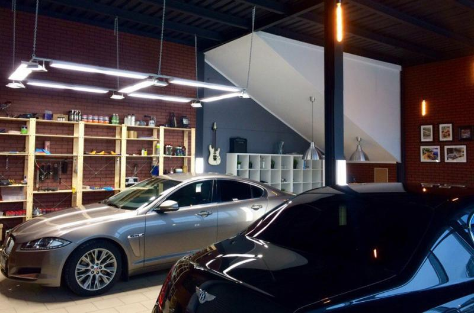
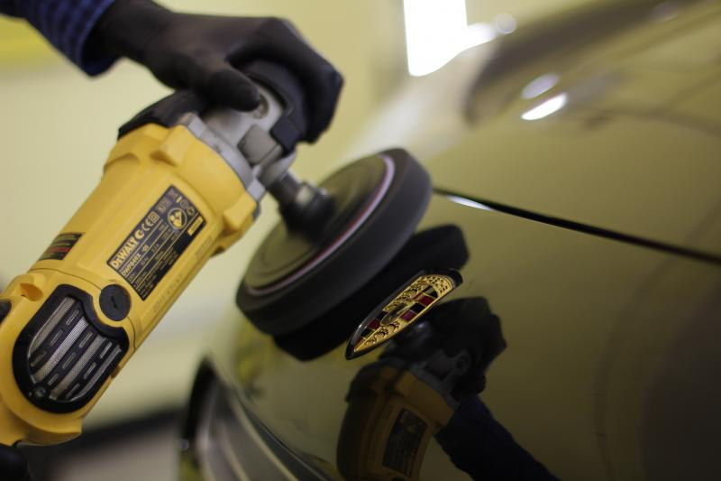
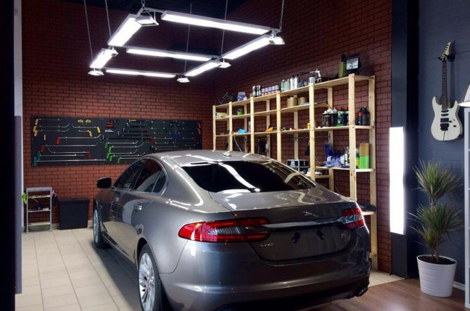
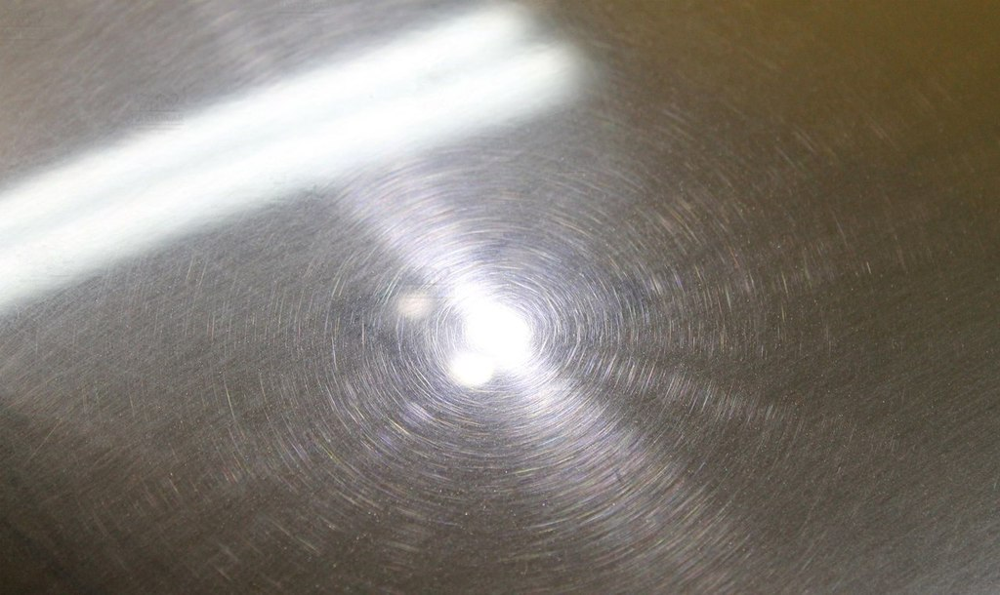
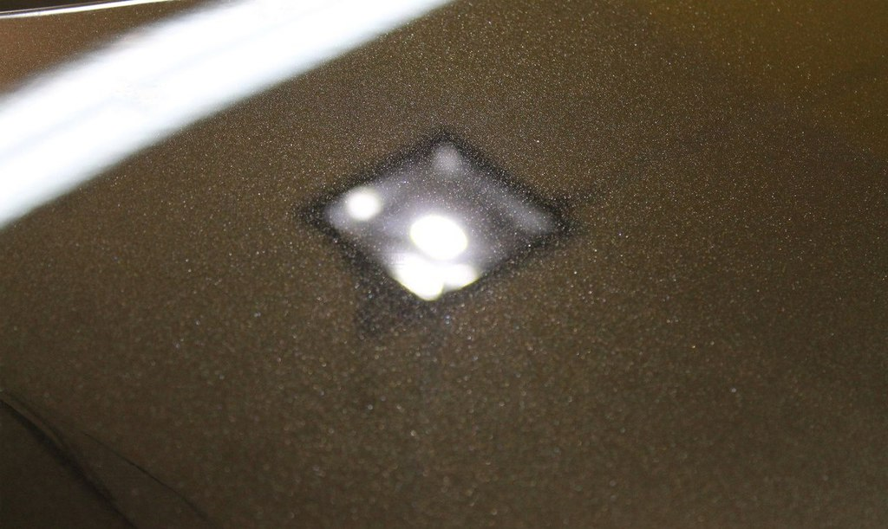

| Услуга |
Цена |
| Освежающая полировка(придает блеск, удаляет до 50% царапин).* |
от 8.000 до 15.000 рублей.*** |
| Восстановительная полировка(появляется глубокий насыщенный цвет и блеск, удаляется до 99% царапин).** |
От 14.000 до 30.000 рублей.*** |
*Рабочий процесс длится 0,5 – 1,5 дня. Подходит для светлых автомобилей, а также при подготовке к продаже, либо относительно свежих.
**Рабочий процесс длится 2 - 3 дня. Подходит для владельцев, которые очень любят свои автомобили. Такой вид полировка необходим перед нанесением защитных составов.
***Возможно изменение стоимости для сложных автомобилей. Также стоимость зависит от степени повреждения лакокрасочного покрытия. Автомобилей со сложным лаком.
Полировка авто
Автомобиль потерял блеск? Появились царапины? Восстановительная полировка кузова вернет вашему автомобилю
первозданный вид.



Зачем полировать автомобиль
Ни для кого не секрет, что в процессе эксплуатации автомобиля, лакокрасочное покрытие кузова (ЛКП) подвергается
механическому и химическому воздействию. Царапины от моек и веток, следы от неосторожной парковки, уф лучи, дорожные
реагенты и соли - все это причины помутнения и разрушения ЛКП кузова.
Если однажды вы обнаружили, что кузов вашего автомобиля покрылся царапинами, а от былого блеска не осталось и
следа, не расстраивайтесь, вернуть первозданный вид лакокрасочному покрытию можно при помощи профессиональной
полировки кузова.


Технология полировки
- В работу принимается чистый автомобиль.
- Диагностика повреждений ЛКП.
- Очистка кузова автоскрабами и косметической глиной от налета.
- Глубокая очистка ЛКП. Удаление въевшихся загрязнений.
- Оклейка не полируемых элементов кузова специальным скотчем.
- Подбор полировочных паст и кругов, в зависимости от типа ЛКП.
- Абразивная полировка поверхности (удаляет царапины).
- Безабразивная полировка поверхности (придает блеск).
-
Защита ЛКП твердым воском или кварцевым покрытием (при заказе услуги — восстановительная полировка).
- Обработка кузова керамикой и жидким стеклом (при заказе услуги обработка кузова защитным составом
Подробнее об услуге).